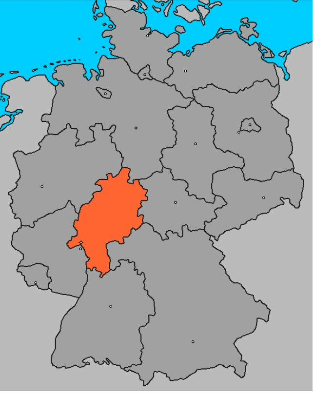
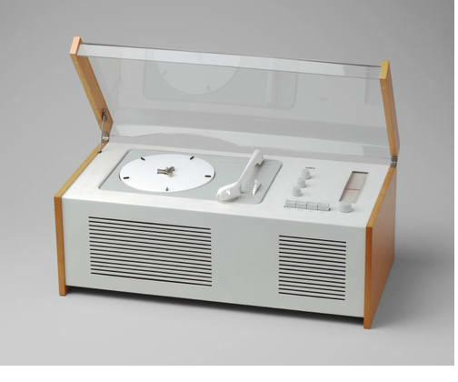
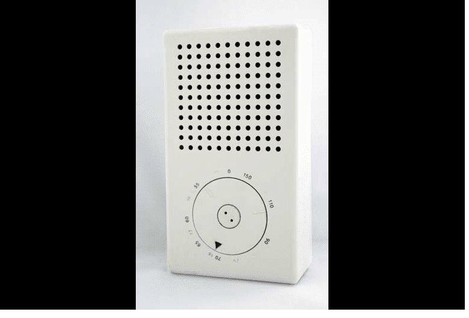
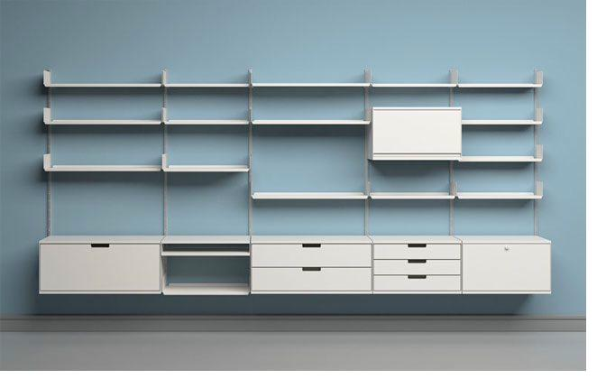
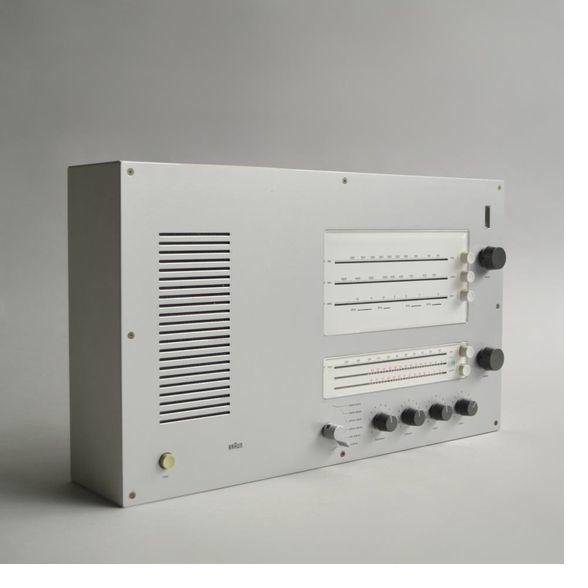
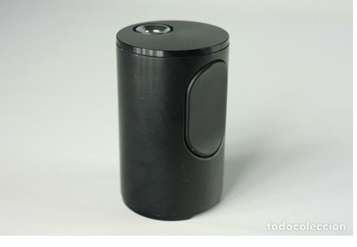
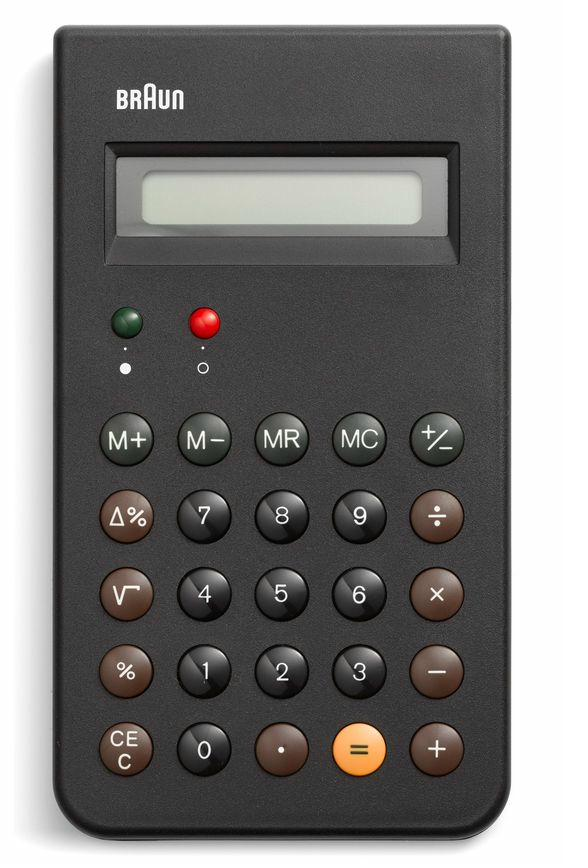

Nació en Wiesbaden, Hesse-Nassau, Alemania.
RAMS

Nacido en Wiesbaden en 1932, Dieter Rams es considerado uno de los diseñadores industriales más influyentes de la historia. Su filosofía, resumida en la famosa frase "menos, pero mejor", revolucionó la forma en que el mundo entiende y produce objetos cotidianos.
Durante más de cuatro décadas al frente del departamento de diseño de Braun, Rams creó productos que combinaban funcionalidad, honestidad y belleza formal. Su influencia llega hasta hoy en empresas como Apple, cuyo diseño de los primeros iPod e iMac reconoce abiertamente la deuda con el trabajo de Rams.

Nació en Wiesbaden, Hesse-Nassau, Alemania.
Comenzó sus estudios en la Escuela de Arte de Wiesbaden.
Se graduó con honores en arquitectura. Wiesbaden.
Se unió a Braun como arquitecto y diseñador de interiores.

SK4: acrílico, liviano, honesto. Quiebre total con el diseño-mueble.

Minimalismo extremo. Referencia directa del iPod años después.

Sistema 606: modular, eterno, reparable. Sigue en producción hoy.
Se convirtió en jefe de diseño en Braun, cargo que ocuparía 34 años.

Hi-fi mural: lenguaje sistemático y coherente.

Diseñó el encendedor de cigarrillos T 2 para Braun.

Calculadora ET66: copiada por Apple sin disimulo.
Primer galardonado con el premio Industrie Forum Design Hannover.
Recibió el premio Ikea y estableció su Fundación.
Se retiró como jefe de diseño de Braun tras 34 años.
Condecorado con la Cruz de Comendador de la Orden del Mérito de Alemania.
Publica los 10 principios del buen diseño.
Medalla a la Trayectoria en el Festival de Diseño de Londres.
Primer ganador del premio a la trayectoria del iF Design Award.
Rams (2018) es un documental dirigido por Gary Hustwit que profundiza en la vida, obra y legado del diseñador.
Dieter Rams habla sobre su filosofía de diseño, el consumismo y el futuro del diseño responsable.